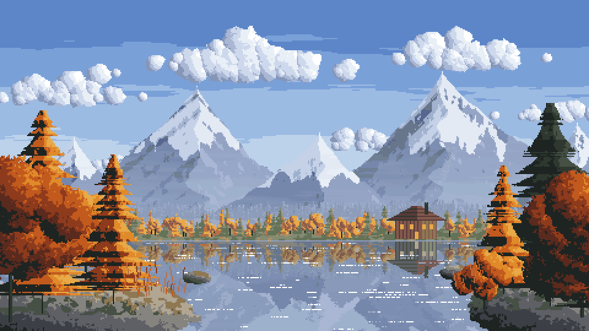
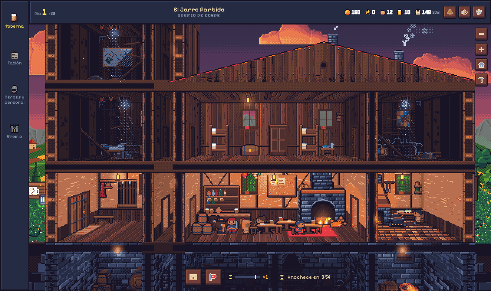
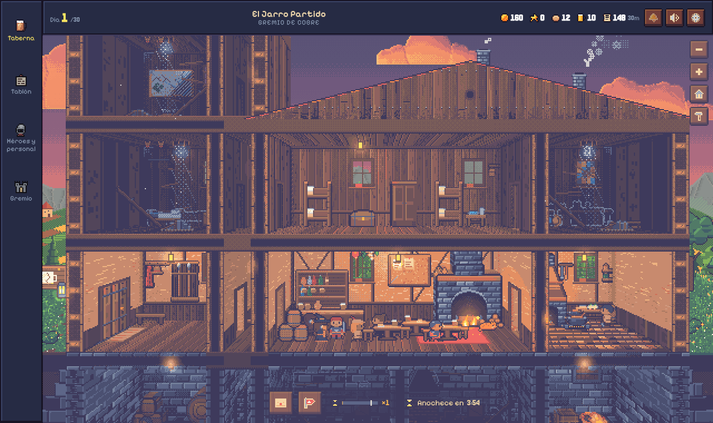
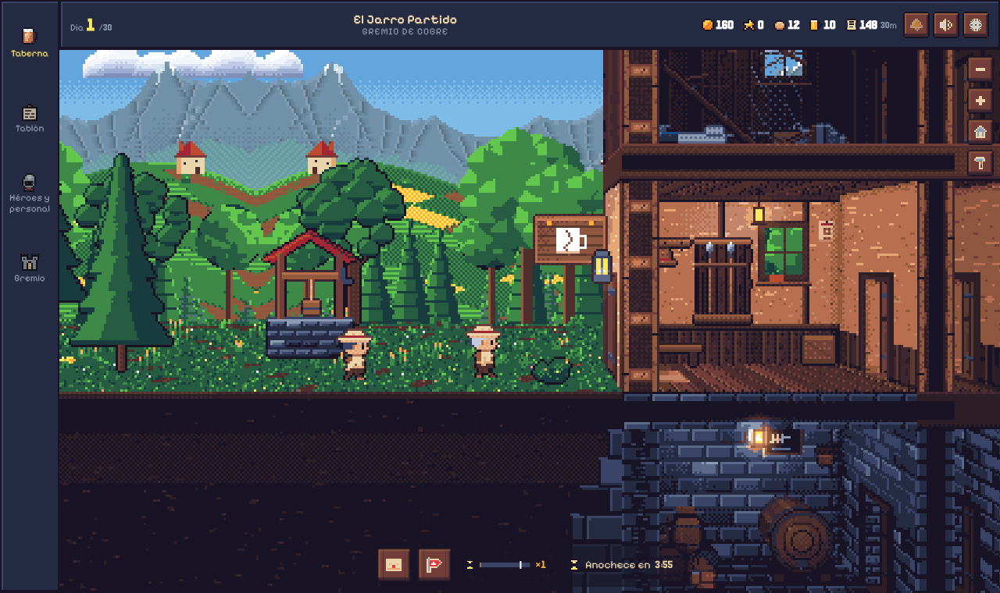
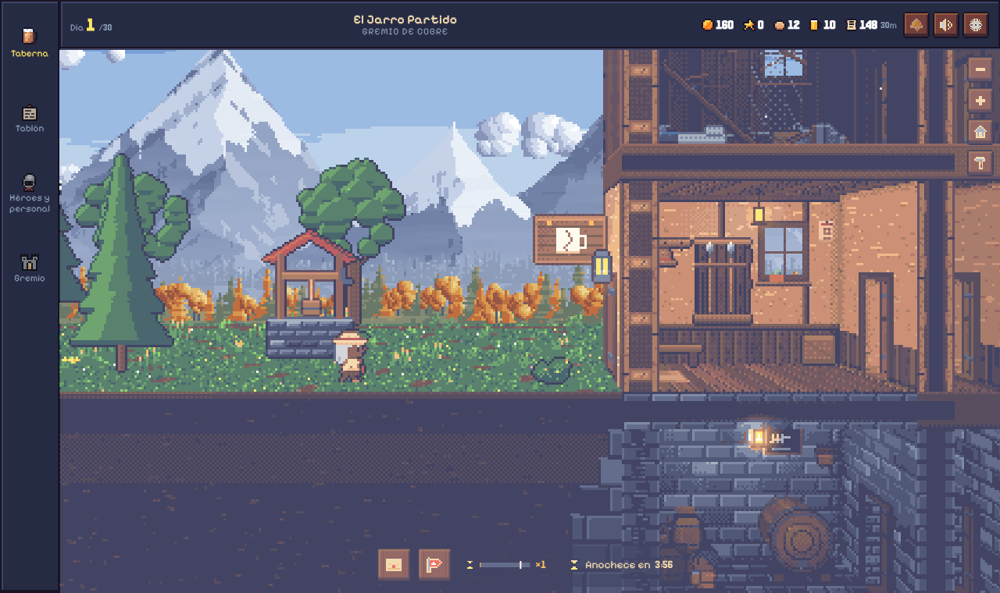

Tres pruebas para medir si el pixel art del juego puede ir hacia el estilo de las referencias: un paisaje nuevo pintado por código, solo cambiar la paleta, y el paisaje nuevo detrás del juego de hoy.



HoyPaleta nuevaEs lo que haría el shader cambiando la paleta (un cambio pequeño). Ayuda a que todo respire, pero el tramado en cuadrícula, los contornos oscuros y las formas siguen siendo los de hoy.


HoyFondo nuevoEl cielo del juego se pintó en magenta para recortarlo y poner detrás el paisaje A. Es la primera fase tal cual. Se nota el choque: los árboles redondos del patio y el pozo siguen en el estilo viejo, y el píxel del fondo es algo más grande.
| Jarro hoy | Referencias | |
|---|---|---|
| Paleta | Endesga 32, saturada, negro puro | Tonos apagados y emparentados, sin negro; cada hora con su gama |
| Profundidad | Por el dibujo | Perspectiva atmosférica: lo lejano se funde con la bruma |
| Sombreado | Trama Bayer en cielo, montes y luces | Racimos de color; bandas de borde mellado |
| Contorno | Oscuro casi en todo | Casi ninguno: la forma la da la luz |
| Luz | Ambiente y focos | Un sol bajo que manda, con borde de luz |
| Agua | No hay | Espejo roto en franjas y brillos que tiemblan |
Sí para el fondo y el exterior; caro para el resto.
A favor: el arte ya es código y todo pasa por una paleta en el shader, y el fondo ya va por capas con paralaje, así que se cambia capa a capa sin tocar las salas. En contra: salas, muebles, gente, retratos y fachada son cientos de piezas dibujadas para la paleta de hoy, con contorno y trama; pasarlas es rehacerlas una a una, y mientras convivan los dos estilos se notará.
Recomendación: hacer 1, 2 y 3 y decidir con eso delante si seguir con 4 y 5.